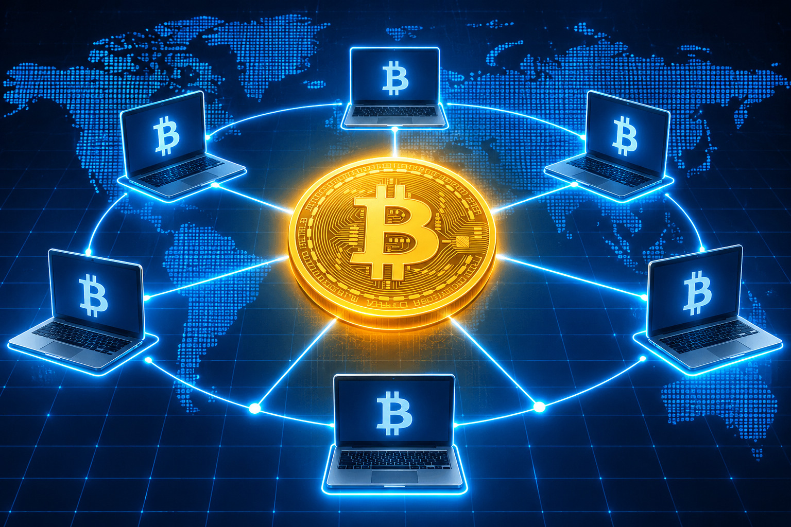

CONOCE EL PROCESO DETRÁS DE LAS TRANSACCIONES DIGITALES
Bitcoin funciona mediante una red de computadores conectados a Internet, llamados nodos. Estos participan en la comunicación y verificación de las transacciones. A diferencia del dinero tradicional, no necesita que un banco controle cada operación, ya que la propia red se encarga de comprobar que las transacciones cumplan las reglas del sistema.

RED DE COMPUTADORES DE BITCOIN
Los nodos son computadores que mantienen una copia de la información de Bitcoin y ayudan a comprobar que las operaciones respeten las reglas de la red. Gracias a su participación, el sistema puede funcionar de manera descentralizada.
PASO 1
Cuando una persona quiere enviar bitcoins a otra, utiliza una billetera digital. Esta permite administrar sus bitcoins y crear una transacción que indica la cantidad que desea transferir y la dirección del destinatario.
La transacción se comparte con la red de Bitcoin. Los participantes de la red verifican que sea válida y, posteriormente, puede incluirse en un bloque. Cuando esto sucede, queda registrada en la cadena de bloques.
EJEMPLO DE UNA TRANSACCIÓN DE BITCOIN
Una transacción permite transferir bitcoins entre dos direcciones digitales. La red comprueba la operación antes de que quede registrada definitivamente.
PASO 2
Blockchain, o cadena de bloques, es la tecnología que permite registrar las transacciones de Bitcoin. Consiste en una serie de bloques conectados entre sí. Cada bloque contiene información de diferentes operaciones y está relacionado con el bloque anterior.
Este sistema permite que la información pueda ser consultada públicamente y hace que modificar registros anteriores resulte muy difícil. Por eso blockchain es una de las tecnologías más importantes de Bitcoin.
REPRESENTACIÓN DE LA CADENA DE BLOQUES
Los bloques se conectan siguiendo un orden cronológico. Cada uno contiene información de las transacciones y una referencia al bloque anterior, formando una cadena de registros relacionados.
PASO 3
La minería es un proceso mediante el cual computadores especializados participan en la validación de transacciones y en la creación de nuevos bloques. Para ello utilizan un sistema llamado prueba de trabajo, que requiere realizar cálculos informáticos.
Los participantes que consiguen añadir un bloque válido pueden recibir una recompensa establecida por las reglas de Bitcoin. Este proceso también ayuda a proteger la red.
EQUIPOS UTILIZADOS EN LA MINERÍA DE BITCOIN
La minería utiliza equipos informáticos especializados que realizan cálculos para participar en la prueba de trabajo. Este proceso permite incorporar nuevos bloques y contribuir a la seguridad de la red.
En el siguiente video podemos comprender de una manera más sencilla cómo funciona Bitcoin, cómo se realizan las transacciones y cómo participa la tecnología blockchain.
El funcionamiento de Bitcoin demuestra cómo la tecnología puede permitir transferencias digitales sin depender de una sola institución. La combinación de criptografía, blockchain y una red descentralizada permite mantener un registro compartido de las operaciones.
Consulta la página oficial para conocer más detalles sobre el sistema Bitcoin.
MÁS INFORMACIÓN SOBRE CÓMO FUNCIONA BITCOIN